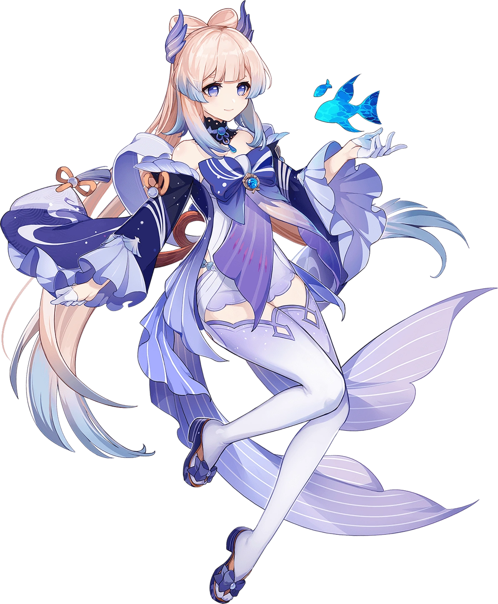

おはよう,
мене звати Юля, мені 16, навчаюсь в 11-А класі ЗЗСО №317. На цій сторінці я трохи розповім про свої
хоббі.
Структуру цієї сторінки можна подивитись на моїй сторінці GitHub у репозиторії з назвою
"informatika"❤️
